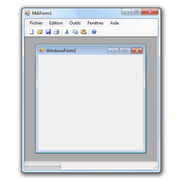

Action : Ajouter une fenêtre enfant
Cette action permet d'ajouter une fenêtre enfant à une fenêtre parent. Autrement, vous aurez une fenêtre dans une autre, comme illustrer ci-dessous.
Information : Pour fermer une fenêtre enfant, utilisez l'action Fermer une fenêtre enfant.
Paramètres
| Paramètres | Descriptions |
|---|---|
| Fenêtre parent | Permet de définir la fenêtre dans laquelle une autre fenêtre sera ajouté. |
| Fenêtre à ajouter à la fenêtre parent | Doit être égale à la fenêtre que vous voulez ajouter à la fenêtre parent. Cette fenêtre ne pas etre celle active. |
| Nom à donner à la fenêtre | Doit être égale à un nom unique qui permettra de reconnaitre la fenêtre ajouté. |
| Variable recevant le résultat | Doit être égale à une variable (non tableau) qui sera elle-même égale à la fenêtre ajouté. Ainsi vous pourrez la modifier des que cette action aura été exécuté. |
Astuce : Pour le paramètre "Nom à donner à la fenêtre", il est conseillé de définir un nom unique. Pour cela, vous pouvez par exemple générer une texte aléatoirement en utilisez l'action Générer un texte aléatoire.
Valeur retournée
La valeur retournée est déterminée par la fenêtre spécifiée dans le paramètre "Fenêtre à ajouter à la fenêtre parent". Elle sera enregistrée dans la variable définit dans le paramètre "Variable recevant le résultat". Cette valeur est de type fenêtre (System.Windows.Forms.Form).
Code Visual Basic.Net généré par SoftwareZator
Votre_Variable = New Votre_Fenêtre() : Votre_Variable.Name = "Nom à donner" : Votre_Variable.MdiContainer = Votre_Fenêtre_Parent : Votre_Variable.Visible = True
Erreurs d'exécutions
Aucune erreur d'exécution n'est détecté ici.
Caractéristiques
| Caractères | Informations |
|---|---|
| Niveau requis | Débutant |
| Catégorie | Fenêtre |
| Type de valeur retourné | Fenêtre (System.Windows.Forms.Form) |
| Fonctionne dans les fonctions | Oui |
| Fonctionne dans la zone de déclaration | Non |
| Peut recevoir des actions enfants | Non |